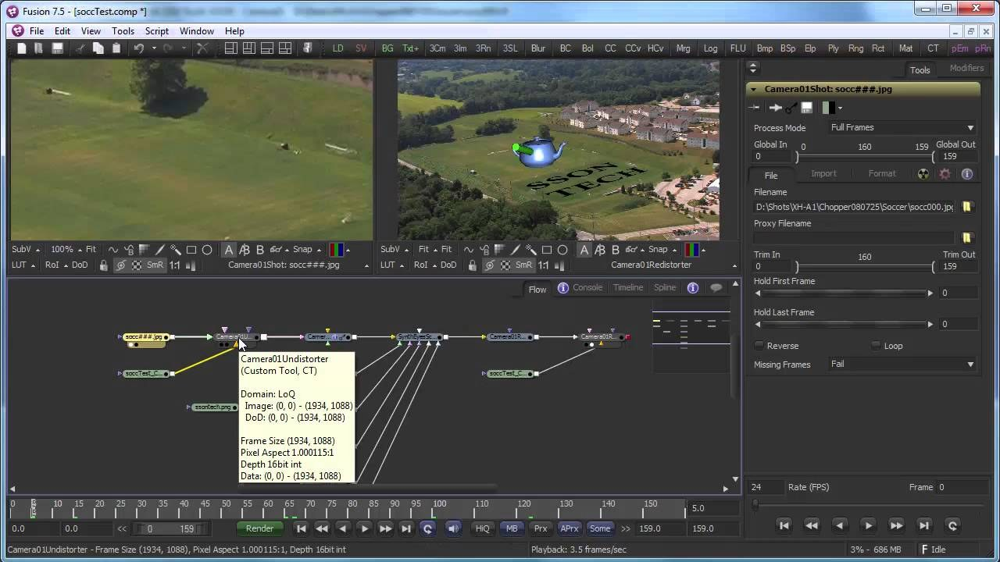

歷史參考｜SynthEyes 1502：加強 Fusion 匯出與角點定位
2015 年 SynthEyes 1502 更新改善 Fusion 交接，可匯出平面追蹤、網格、多攝影機與鏡頭畸變影像映射，並另建匯出器把追蹤結果轉為 Fusion 的角點定位節點。

製作案例 ★★★☆☆
完整分析
三維追蹤到 Fusion 的交接流程
舊版 Fusion 匯出器擴充三維平面追蹤器、基本或匯入網格、追蹤生成網格、紋理及多攝影機，鏡頭畸變則透過影像映射傳遞。它改進的是已有追蹤資料的合成交接，不是把 Fusion 轉成另一套自動建模軟體。
角點定位與貼合鏡頭的製作價值
第二個匯出器會從二維或三維平面追蹤建立 Fusion corner pin 節點，和完整三維網格匯出是不同路徑。推論上，平面替換與三維合成可依鏡頭需求選擇資料形式，不必為每種平面貼合工作都交付整個三維場景。
歷史版本與鏡頭重建的驗證限制
文中認為影像映射有助於重現未被軟體硬編碼的鏡頭畸變，但沒有逐鏡頭的精度測試。所列 Windows、Linux、Mac OS X 與授權價格均屬 2015 年，不能由此保證目前 Fusion 或作業系統仍與這個舊匯出器相容。
BRIEF｜來源已驗證；證據深度較有限，完整分析會明確區分已知資訊與待驗證事項。